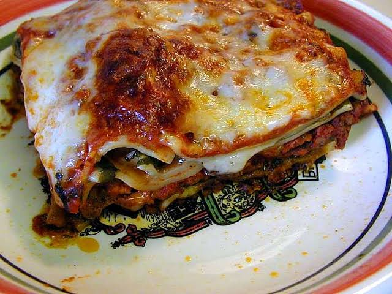

Lasagna

Typical serving of a lasagna
Lasagna is a hearty, baked Italian casserole built from alternating layers of wide, flat pasta sheets, rich sauces, and melted cheese. In its most classic form, tender noodles cradle a savory, slow-simmered meat ragù (or marinara), a creamy white béchamel or seasoned ricotta filling, and generous blankets of mozzarella and parmesan. Baked until the interior is molten and cohesive while the top turns golden-brown and slightly crisp around the edges, it is a deeply comforting, sliceable dish prized for its contrast of rich, tangy, and creamy textures
Ingredients
- Lasagna noodles: 1 box (about 12-15 flat sheets)
- Ground beef: 1 lb (450 g)
- Marinara or pasta sauce: 1 large jar (24-32 oz / 700-900 g)
- Ricotta cheese: 15 oz (425 g)
- Mozzarella cheese: 2 to 3 cups, shredded
- Parmesan cheese: ½ cup, grated
- Egg: 1 large
- Garlic: 2 cloves, minced (or ½ teaspoon garlic powder)
- Seasonings: 1 teaspoon dried Italian seasoning, salt, and black pepper
Steps
- Prep and preheat: Preheat your oven to 375°F (190°C). If using traditional noodles, boil them in salted water until just al dente (about 8 minutes), then drain and lay them flat on a greased sheet or foil so they don't stick. (Skip boiling if using oven-ready noodles.)
- Cook the meat sauce: In a large skillet over medium-high heat, brown the ground beef until no pink remains, then drain the excess grease. Add the garlic, Italian seasoning, a pinch of salt, and pepper, stirring for 1 minute. Pour in the marinara sauce and let it simmer on low for 5–10 minutes.
- Mix the cheese filling: In a medium bowl, stir together the ricotta cheese, egg, half of the Parmesan cheese, and a pinch of salt and pepper until smooth.
- Assemble the layers: Spread a thin layer of meat sauce on the bottom of a 9x13-inch baking dish to prevent sticking. Add a single layer of noodles, then spread a third of the ricotta mixture over them, followed by a third of the meat sauce and a handful of shredded mozzarella. Repeat this layering pattern twice more, finishing with a final layer of noodles topped with the remaining sauce, mozzarella, and the rest of the Parmesan.
- Bake: Cover the dish tightly with aluminum foil (tent it slightly so the cheese doesn't stick) and bake for 25 minutes. Remove the foil and bake for another 15–20 minutes until the cheese is bubbly and golden-brown.
- Rest before slicing: Let the lasagna sit on the counter for 15 minutes before cutting into it so the layers firm up and hold their shape.
Home